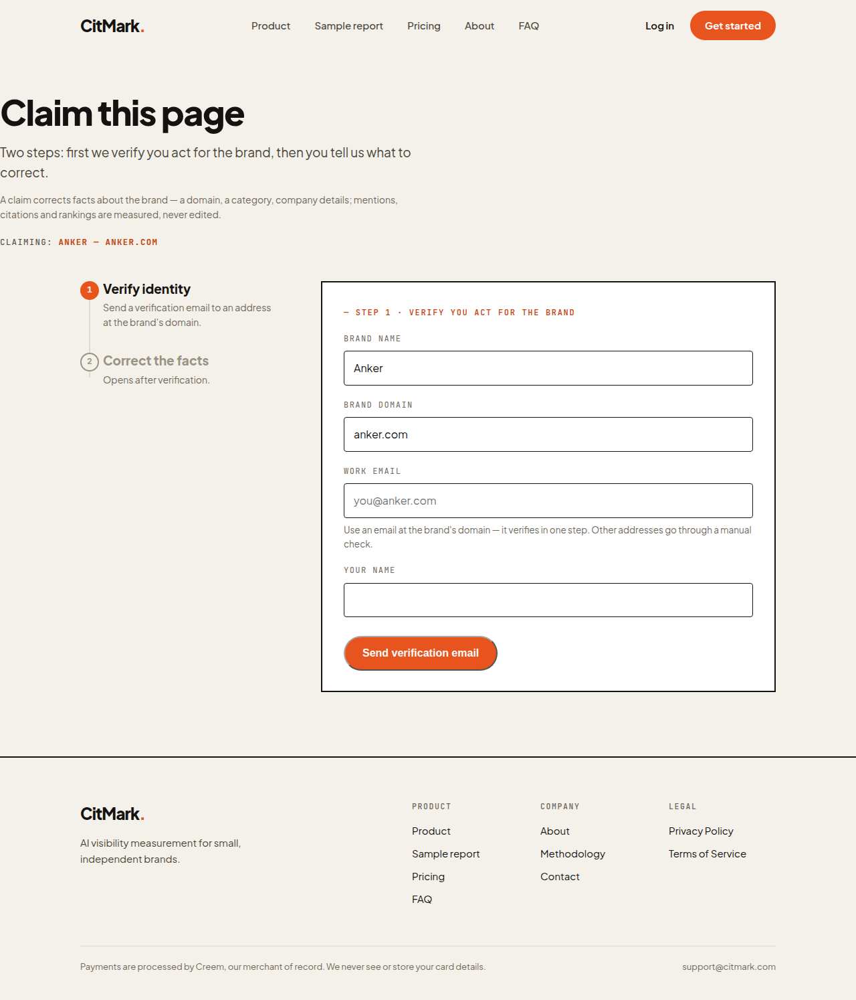
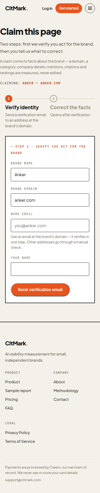
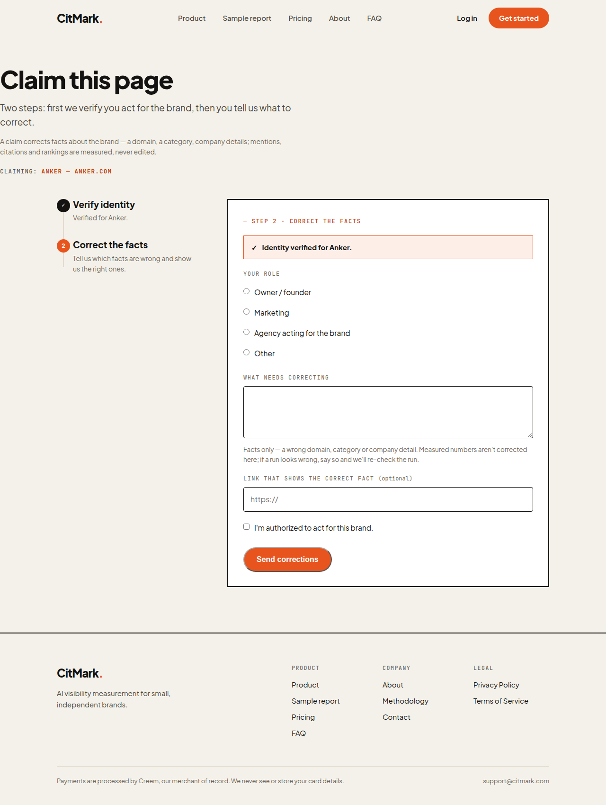
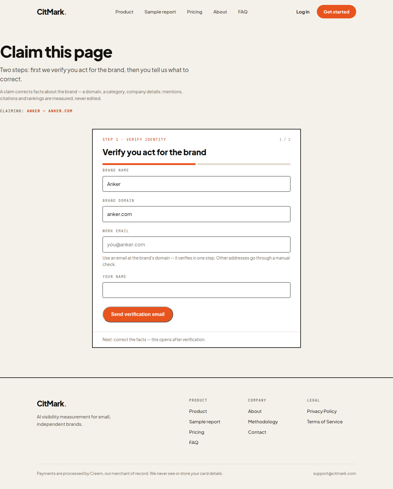
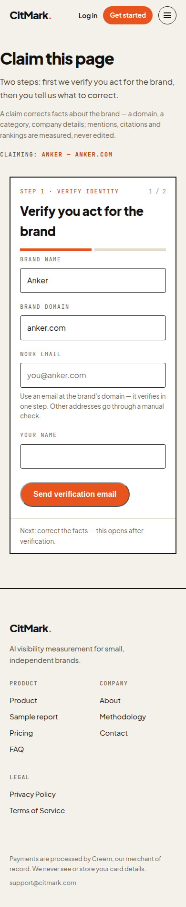
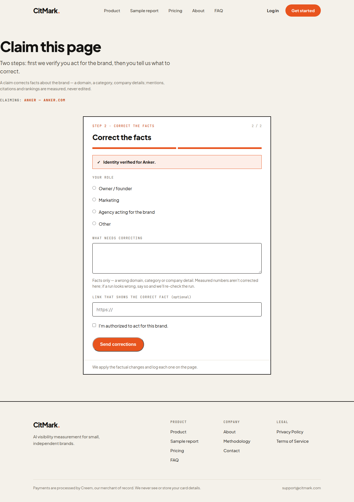
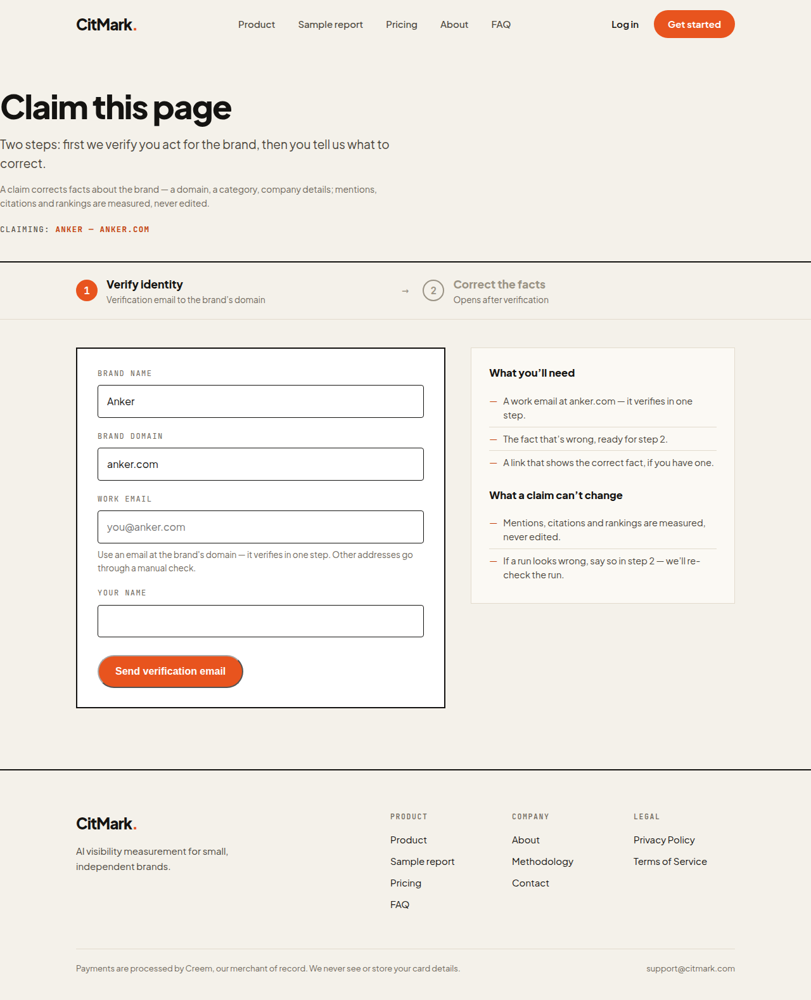
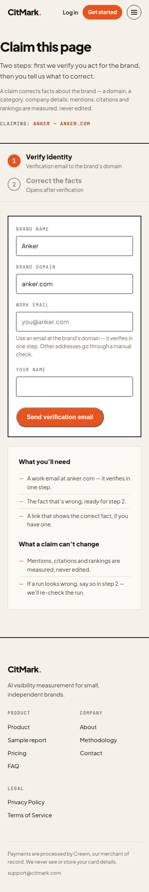
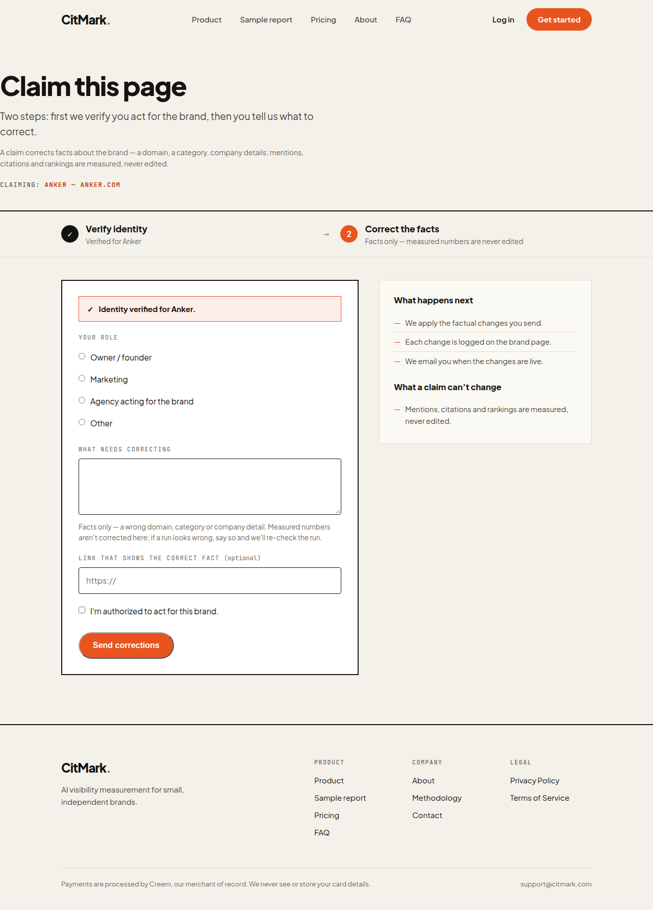

每版三图：第一步桌面 1280 整页 / 第一步移动 390 整页 / 第二步桌面 1280 整页。文案全按 PD 规格 v2 定字；无品牌数据格、无销售带。QA 第三阶找错已判：A、B 干净过；C 带一条条件必修（见 C 版注）。
左侧竖轨恒显两步状态（当前/已验/未开），右列单卡承接当前步；隔天点验证链回来仍见全局。
claim-v9-a-s1-20261125.html · c62dcf22 · 5,815 B（第二步 f2c67ef9）
QA：干净过。



居中单卡，卡头带 Step 1/2 与分段进度，卡脚预告下一步；一屏只做一个动作，移动端形态最自然。
claim-v9-b-s1-20261125.html · 382ed198 · 5,314 B（第二步 54d401e1）
QA：干净过。



页头下横向步进带定格全局，下分双栏：左表单、右说明栏（要备什么/接下来发生什么），对首次认领者最友好。
claim-v9-c-s1-20261125.html · 39a3e5a9 · 6,538 B（第二步 4c478f2a）
QA：过，但带必修——说明栏与页头口径注有重复；若点中 C，定版前删说明栏「不可改」整块与邮箱条，只留备齐物。


